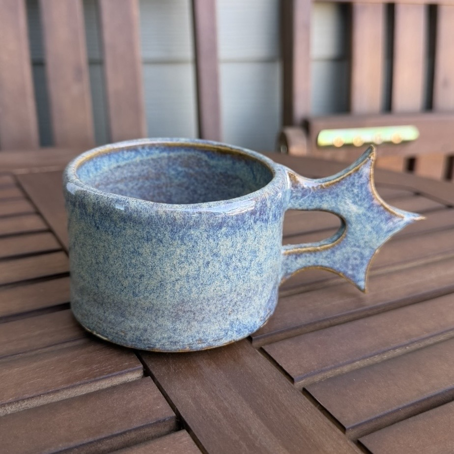
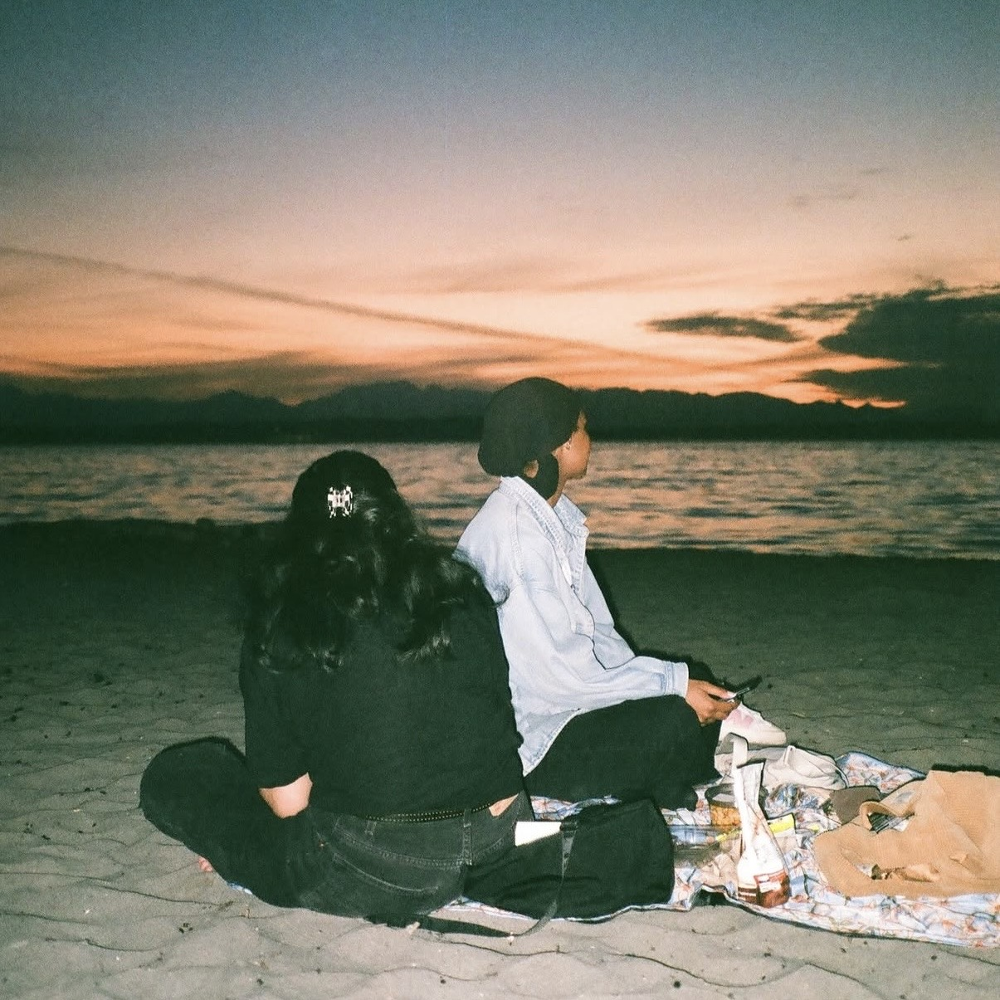
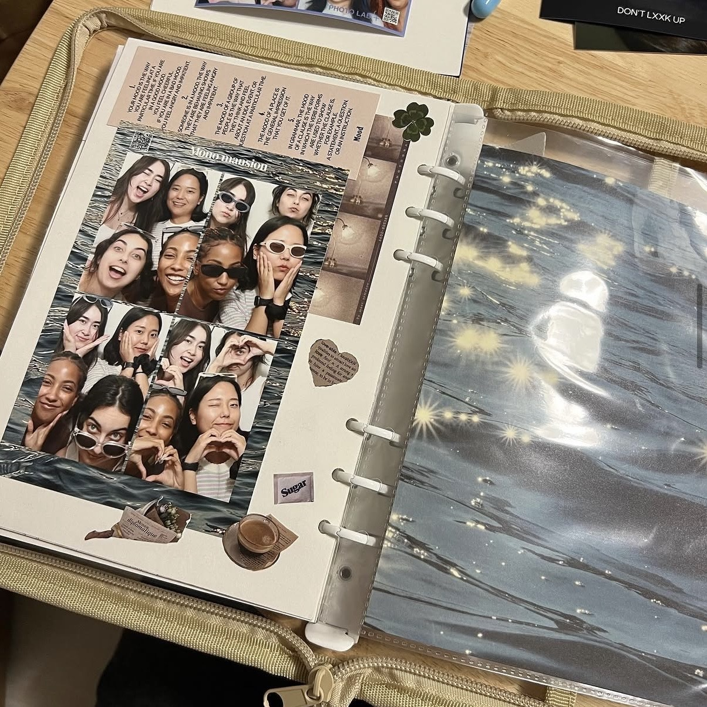
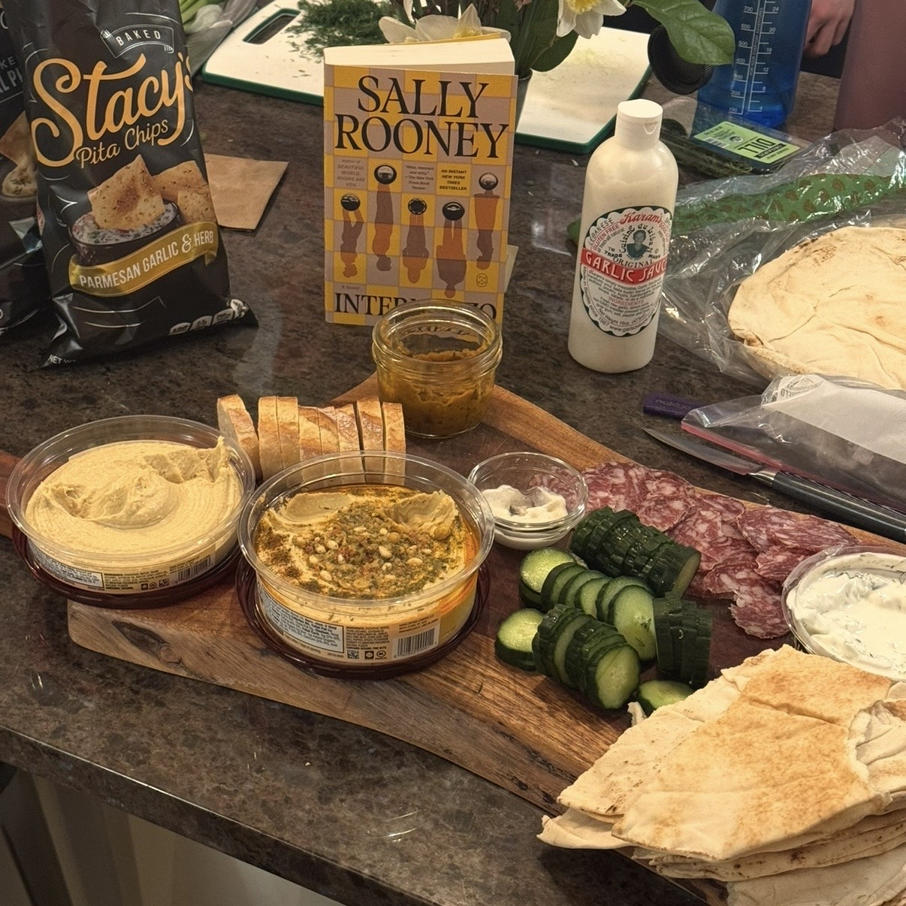
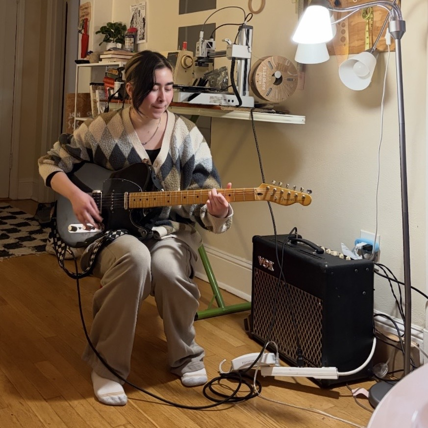
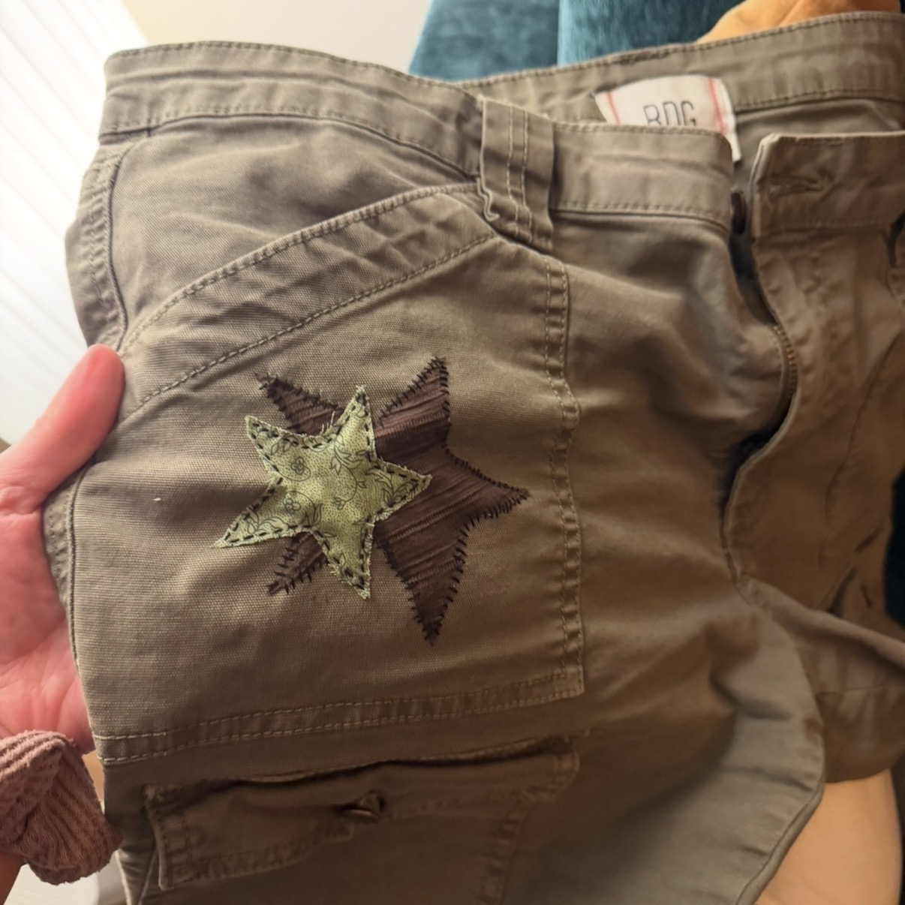
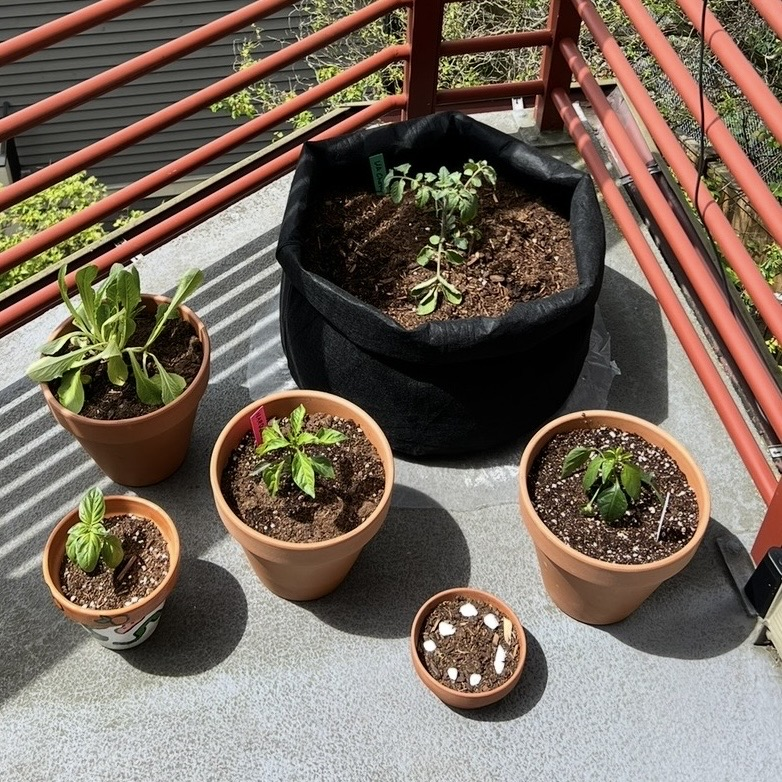
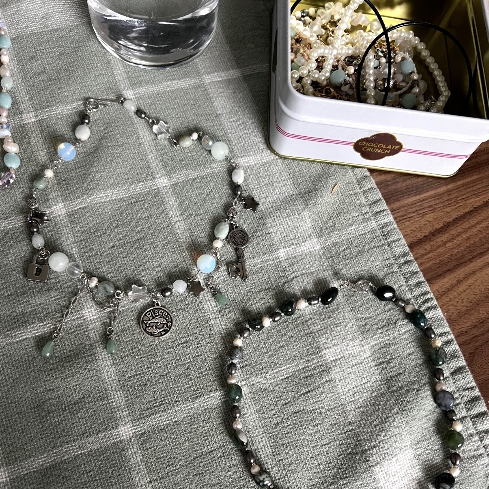

nice to meet you!
Product Manager II @ Xbox · Indie Game Developer
I'm a Product Manager at Xbox working on the discovery experiences that connect players with the games they love — building AI-driven metadata systems that power personalization.
I'm also a game developer. Six shipped titles, mostly solo, mostly nights and weekends. Working both sides — the platform that surfaces games, and the games that need surfacing — shapes how I think about building for an audience.
[REPLACE: game one], [game two], and replaying [game three] for the [n]th time. [One line of opinion — this is what gives an interviewer something to react to.]
Games I've designed, built, and shipped — mostly solo.
A Hallmark-Christmas-movie romance where the love interest is a claw machine you actually have to beat.
[REPLACE] Built the claw machine with real rigged physics instead of a scripted win — the joke only lands if the player genuinely feels cheated.
You've inherited your uncle's potion shop, and the customers are demanding.
[REPLACE] Scoped to a single shift so the game could ship complete rather than sprawl into an unfinished shop sim.
A deckbuilding puzzle wrapped in a story about friendship, where your choices determine the cards you're dealt.
[REPLACE] Tied story choices directly to the card pool so puzzle difficulty became a consequence of the player's relationships.
The warlock-dog sequel — built entirely in Korean.
[REPLACE] Rebuilt the input system around Hangul syllable composition, since character-by-character matching doesn't work in Korean.
Defend earth from wizard cats using nothing but your keyboard.
[REPLACE] Tuned word difficulty to scale with typing speed rather than time elapsed, so challenge tracks the player instead of the clock.
Made during covid lockdown — the game that started it all and pushed me into game dev.
[REPLACE] Shipped it start-to-finish while stuck at home, and finishing that first game is what convinced me I could actually build the ones that came after.
Earlier work: web development and UX projects at UCLA (2020–21) — happy to share on request.
Lead product for Xbox Search, Notifications, and Discovery — helping players find the games they want, and making sure the messages Xbox sends them are trustworthy, timely, and worth their attention.
Owned the metadata, storefront, and PC catalog experiences that help players find and buy games — building the AI data layer behind Xbox's recommendations, shipping the discovery and commerce features on top of it, and expanding what's available to play on PC.
C#, ASP.NET, SQLite, Unity, Azure DevOps
B.A. Linguistics & Computer Science, Korean
Cum Laude · Phi Beta Kappa · ACM Studio (Game Dev) · ACM Design · Upsilon Pi Epsilon
A few notes from teammates across engineering, design, and product.
The feature recently went GA which is an incredible milestone and quite quick given when we started. I remember it was on the roadmap for “sometime in calendar year 2026,” so you delivered much ahead of schedule! And it couldn't have come at a better time either. It feels great to be the only console platform with a solution to this problem. That will go a long way not just with players, but also our creators. And it's thanks to your hard work and dedication.
You bring great energy to our collaborations. You demonstrated excellent adaptability by quickly familiarizing yourself with this new domain, driven by your proactive approach to asking questions and providing feedback, allowing you to confidently represent the project and make impactful decisions. Beyond that, your calm and decisive leadership fosters a positive, productive environment for discussion. Keep killing it!
You consistently demonstrate an exceptional attention to detail in our quality control filter work. Your ability to identify potential issues early and propose practical solutions ensures that our process remains robust and reliable. I also appreciate your proactive approach and clear communication to make collaboration smooth and efficient, and your commitment to maintaining high standards has been a key factor in delivering accurate, high-quality results.
Your enthusiasm and clarity are amazing — I never have to worry about if something has been overlooked with your involvement.
There's a phrase from boxing, I think, about “punching above your weight class” — meaning, doing more than would be expected of your level/experience/etc. You are consistently doing that — in part because you've had to, with some very high visibility work that brings out passionate, senior people who have strong opinions that need to be reconciled. I'm so impressed with your poise and calm in the face of these difficult conversations. It's honestly awesome.
Your recent document outlining the possible paths forward was a master class in objectivity — you were able to see the problem from all sides super fairly, and you absolutely deserve all the credit for getting the team to a decision today.
Building culture at Xbox — beyond the product spec.
Some of the work I care about most doesn't ship in a product. I like making the place better for the people in it — running events, leading intern cohorts, and organizing our community groups.
Co-led the summer intern events program — the people, the budget, the partnerships, and the day-of.
Different mediums, same instinct — I like making things and handing them to people.
pottery with a high failure rate · photographs · scrapbooks nobody asked for · a book club I take too seriously · music, badly and often

[Write a line about pottery — what you make, how it goes.]
click to flip back
[Write a line about your photography.]
click to flip back
[Write a line about the scrapbooks you make.]
click to flip back
[Write a line about the book club you organize.]
click to flip back
[Write a line about the music you make.]
click to flip back
[Write a line about what you sew.]
click to flip back
[Write a line about the fruits and veggies you grow.]
click to flip back
[Write a line about the jewelry you make.]
click to flip back